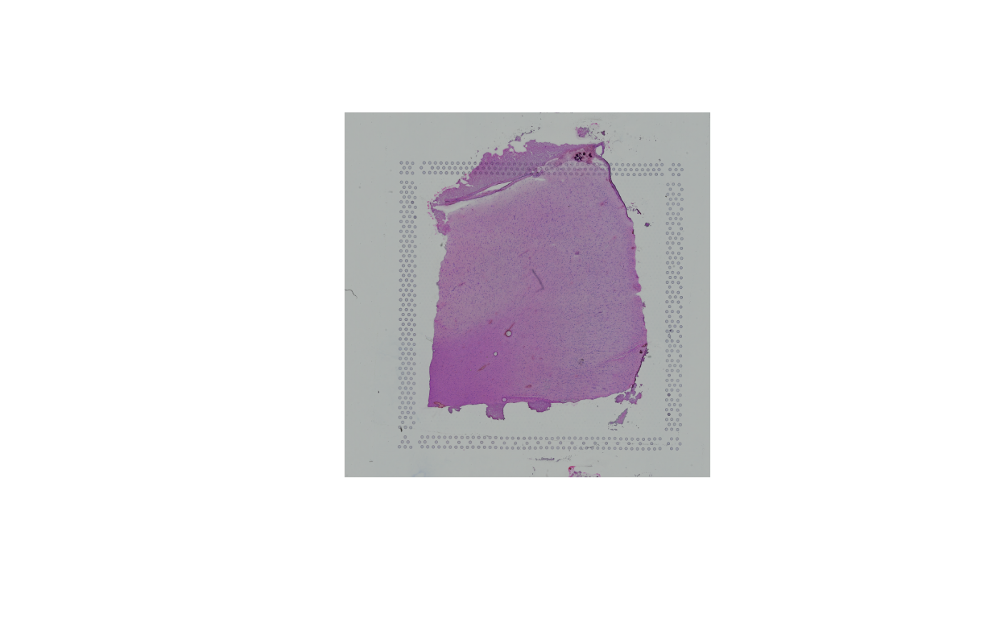

intro-spatial-01.RmdSpatialExperiment object and how
it’s different from a SingleCellExperiment object.SpatialExperiment object into
R/Bioconductor.SpatialExperiment objectIn the following analysis sections, we use a pre-prepared dataset
(preprocessing steps described here),
and saved the object in the SpatialExperiment format. This
is available from the STexampleData
R/Bioconductor package.
The dataset consists of a single sample of human brain from the dorsolateral prefrontal cortex (DLPFC) region, measured using the 10x Genomics Visium platform, sourced from Kristen R. Maynard et al. (2021). The dataset is also described in more detail in [Visium human DLPFC workflow].
Here, we show how to load the data from the
STexampleData package.
# load object
spe <- Visium_humanDLPFC()We can look at the SpatialExperiment object by printing
it to the screen
# inspect object
spe## class: SpatialExperiment
## dim: 33538 4992
## metadata(0):
## assays(1): counts
## rownames(33538): ENSG00000243485 ENSG00000237613 ... ENSG00000277475
## ENSG00000268674
## rowData names(3): gene_id gene_name feature_type
## colnames(4992): AAACAACGAATAGTTC-1 AAACAAGTATCTCCCA-1 ...
## TTGTTTGTATTACACG-1 TTGTTTGTGTAAATTC-1
## colData names(7): barcode_id sample_id ... ground_truth cell_count
## reducedDimNames(0):
## mainExpName: NULL
## altExpNames(0):
## spatialCoords names(2) : pxl_col_in_fullres pxl_row_in_fullres
## imgData names(4): sample_id image_id data scaleFactor
# number of features (rows) and spots (columns)
dim(spe)## [1] 33538 4992
# names of 'assay' tables
assayNames(spe)## [1] "counts"## DataFrame with 6 rows and 3 columns
## gene_id gene_name feature_type
## <character> <character> <character>
## ENSG00000243485 ENSG00000243485 MIR1302-2HG Gene Expression
## ENSG00000237613 ENSG00000237613 FAM138A Gene Expression
## ENSG00000186092 ENSG00000186092 OR4F5 Gene Expression
## ENSG00000238009 ENSG00000238009 AL627309.1 Gene Expression
## ENSG00000239945 ENSG00000239945 AL627309.3 Gene Expression
## ENSG00000239906 ENSG00000239906 AL627309.2 Gene Expression## DataFrame with 6 rows and 7 columns
## barcode_id sample_id in_tissue array_row
## <character> <character> <integer> <integer>
## AAACAACGAATAGTTC-1 AAACAACGAATAGTTC-1 sample_151673 0 0
## AAACAAGTATCTCCCA-1 AAACAAGTATCTCCCA-1 sample_151673 1 50
## AAACAATCTACTAGCA-1 AAACAATCTACTAGCA-1 sample_151673 1 3
## AAACACCAATAACTGC-1 AAACACCAATAACTGC-1 sample_151673 1 59
## AAACAGAGCGACTCCT-1 AAACAGAGCGACTCCT-1 sample_151673 1 14
## AAACAGCTTTCAGAAG-1 AAACAGCTTTCAGAAG-1 sample_151673 1 43
## array_col ground_truth cell_count
## <integer> <character> <integer>
## AAACAACGAATAGTTC-1 16 NA NA
## AAACAAGTATCTCCCA-1 102 Layer3 6
## AAACAATCTACTAGCA-1 43 Layer1 16
## AAACACCAATAACTGC-1 19 WM 5
## AAACAGAGCGACTCCT-1 94 Layer3 2
## AAACAGCTTTCAGAAG-1 9 Layer5 4
# spatial coordinates
head(spatialCoords(spe))## pxl_col_in_fullres pxl_row_in_fullres
## AAACAACGAATAGTTC-1 3913 2435
## AAACAAGTATCTCCCA-1 9791 8468
## AAACAATCTACTAGCA-1 5769 2807
## AAACACCAATAACTGC-1 4068 9505
## AAACAGAGCGACTCCT-1 9271 4151
## AAACAGCTTTCAGAAG-1 3393 7583The image itself can be accessed using getImg(), or
retrieved directly from the imgData() functions:
# image metadata
imgData(spe)## DataFrame with 2 rows and 4 columns
## sample_id image_id data scaleFactor
## <character> <character> <list> <numeric>
## 1 sample_151673 lowres #### 0.0450045
## 2 sample_151673 hires #### 0.1500150
spi <- getImg(spe)
spi## 600 x 600 (width x height) LoadedSpatialImageData available in an object of class SpatialImage may be accessed via
the imgRaster() and imgSource() accessors:

## R version 4.2.1 (2022-06-23)
## Platform: aarch64-apple-darwin21.5.0 (64-bit)
## Running under: macOS Monterey 12.4
##
## Matrix products: default
## BLAS: /opt/homebrew/Cellar/openblas/0.3.20/lib/libopenblasp-r0.3.20.dylib
## LAPACK: /opt/homebrew/Cellar/r/4.2.1/lib/R/lib/libRlapack.dylib
##
## locale:
## [1] en_US.UTF-8/en_US.UTF-8/en_US.UTF-8/C/en_US.UTF-8/en_US.UTF-8
##
## attached base packages:
## [1] stats4 stats graphics grDevices utils datasets methods
## [8] base
##
## other attached packages:
## [1] STexampleData_1.4.5 ExperimentHub_2.4.0
## [3] AnnotationHub_3.4.0 BiocFileCache_2.4.0
## [5] dbplyr_2.2.1 SpatialExperiment_1.6.0
## [7] SingleCellExperiment_1.18.0 SummarizedExperiment_1.26.1
## [9] Biobase_2.56.0 GenomicRanges_1.48.0
## [11] GenomeInfoDb_1.32.2 IRanges_2.30.0
## [13] S4Vectors_0.34.0 BiocGenerics_0.42.0
## [15] MatrixGenerics_1.8.1 matrixStats_0.62.0
##
## loaded via a namespace (and not attached):
## [1] bitops_1.0-7 fs_1.5.2
## [3] bit64_4.0.5 filelock_1.0.2
## [5] httr_1.4.3 rprojroot_2.0.3
## [7] tools_4.2.1 bslib_0.3.1
## [9] utf8_1.2.2 R6_2.5.1
## [11] HDF5Array_1.24.1 DBI_1.1.3
## [13] rhdf5filters_1.8.0 tidyselect_1.1.2
## [15] curl_4.3.2 bit_4.0.4
## [17] compiler_4.2.1 textshaping_0.3.6
## [19] cli_3.3.0 desc_1.4.1
## [21] DelayedArray_0.22.0 sass_0.4.1
## [23] rappdirs_0.3.3 pkgdown_2.0.5
## [25] systemfonts_1.0.4 stringr_1.4.0
## [27] digest_0.6.29 rmarkdown_2.14
## [29] R.utils_2.12.0 XVector_0.36.0
## [31] pkgconfig_2.0.3 htmltools_0.5.2
## [33] sparseMatrixStats_1.8.0 highr_0.9
## [35] fastmap_1.1.0 limma_3.52.2
## [37] rlang_1.0.3 rstudioapi_0.13
## [39] RSQLite_2.2.14 shiny_1.7.1
## [41] DelayedMatrixStats_1.18.0 jquerylib_0.1.4
## [43] generics_0.1.3 jsonlite_1.8.0
## [45] BiocParallel_1.30.3 dplyr_1.0.9
## [47] R.oo_1.25.0 RCurl_1.98-1.7
## [49] magrittr_2.0.3 GenomeInfoDbData_1.2.8
## [51] scuttle_1.6.2 Matrix_1.4-1
## [53] Rcpp_1.0.8.3 Rhdf5lib_1.18.2
## [55] fansi_1.0.3 lifecycle_1.0.1
## [57] R.methodsS3_1.8.2 stringi_1.7.6
## [59] yaml_2.3.5 edgeR_3.38.1
## [61] zlibbioc_1.42.0 rhdf5_2.40.0
## [63] grid_4.2.1 blob_1.2.3
## [65] promises_1.2.0.1 parallel_4.2.1
## [67] dqrng_0.3.0 crayon_1.5.1
## [69] lattice_0.20-45 Biostrings_2.64.0
## [71] beachmat_2.12.0 KEGGREST_1.36.2
## [73] locfit_1.5-9.5 magick_2.7.3
## [75] knitr_1.39 pillar_1.7.0
## [77] rjson_0.2.21 codetools_0.2-18
## [79] BiocVersion_3.15.2 glue_1.6.2
## [81] evaluate_0.15 BiocManager_1.30.18
## [83] png_0.1-7 httpuv_1.6.5
## [85] vctrs_0.4.1 purrr_0.3.4
## [87] assertthat_0.2.1 cachem_1.0.6
## [89] xfun_0.31 mime_0.12
## [91] DropletUtils_1.16.0 xtable_1.8-4
## [93] later_1.3.0 ragg_1.2.2
## [95] tibble_3.1.7 AnnotationDbi_1.58.0
## [97] memoise_2.0.1 interactiveDisplayBase_1.34.0
## [99] ellipsis_0.3.2